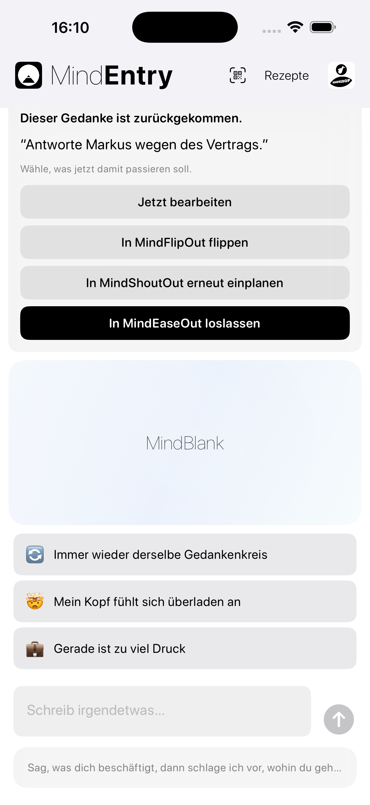
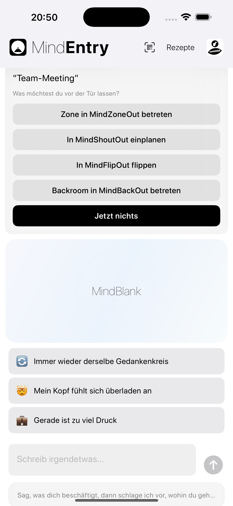

Ein stiller Impuls, bevor Denkreibung entsteht.
MindPreCog ist die kontextbewusste Ebene von MINDBEBOP.
Es bemerkt bedeutsame Momente und wiederkehrende Muster – wenn eine Erinnerung erneut erscheint, der Morgen beginnt, die Schlafenszeit näher rückt, ein Meeting bevorsteht, eine vertraute Situation auftaucht oder sich ein wiederkehrender Ablauf abzeichnet – und bietet den passenden strukturellen Weg an.
Anstatt darauf zu warten, dass du selbst bemerkst, dass du Unterstützung brauchst, bringt MindPreCog das passende Werkzeug behutsam zum richtigen Zeitpunkt ins Blickfeld.
Keine Analyse. Keine Interpretation. Keine Diagnose. Nur eine rechtzeitige Einladung, Denkreibung zu verringern, bevor sie größer wird.
Die meisten Apps warten darauf, dass du um Hilfe bittest. MindPreCog bietet Struktur an, bevor du daran denkst zu fragen.
Diese Momente werden zu stillen Gelegenheiten, anders zu reagieren.
Kontextbewusste Hinweise, kein Gedankenlesen.
MindPreCog analysiert deine Gedanken nicht.
Stattdessen reagiert es auf einfache Signale wie:
Wenn einer dieser Momente eintritt, kann MindEntry geöffnet werden und den passendsten nächsten Schritt anbieten.
Das kann bedeuten, einen Gedanken zu Shouten, ihn zu Flippen, ihn erneut zu terminieren, den Backroom zu betreten, zu Zonen, ihn zu Releasen, ein Rezept zu erstellen, einen CogniHack zu starten oder einfach nichts zu tun.
Am Morgen kann MindEntry fragen:
Was verdient heute deine Aufmerksamkeit?
Vor dem Schlafengehen kann MindEntry fragen:
Gibt es etwas, das du bis morgen beiseitelegen möchtest?
Vor einem Meeting kann MindEntry fragen:
Gibt es etwas, das du vor der Tür lassen möchtest?
Wenn dieselbe Erinnerung mehrfach neu terminiert wurde:
Diese Erinnerung taucht immer wieder auf.
MindEntry kann dann Optionen wie MindShoutOut, MindFlipOut, MindZoneOut, MindBackOut, ein Rezept, einen CogniHack oder auch einfach nichts tun anbieten.
Ein kleiner Teil der Denkreibung wird entfernt, bevor er die Chance hat zu wachsen.
Stilles Wahrnehmen, keine Analytik.
MindPreCog kann gelegentlich bemerken, wenn eine Erinnerung, ein Rezept, eine Ablenkung, eine Situation oder ein Ablauf über längere Zeit hinweg immer wieder erscheint.
Das kann eine Erinnerung sein, die immer wieder auftaucht, ein Rezept, das regelmäßig genutzt wird, eine wiederkehrende Ablenkung oder eine vertraute Abfolge über mehrere MINDBEBOP-Werkzeuge hinweg.
Es werden keine Berichte erstellt. Es werden keine Punktzahlen berechnet. Es wird kein Verhalten bewertet.
Stattdessen kann MindPreCog gelegentlich einen einfachen Hinweis anzeigen:
Dieses Muster wiederholt sich.
Das Ziel ist nicht Analyse. Das Ziel ist es, wiederkehrender Denkreibung Struktur zu geben, bevor sie immer wieder an die Oberfläche zurückkehrt.
MindPreCog bemerkt lediglich bedeutsame Momente und wiederkehrende Muster und bietet Struktur an, wenn sie hilfreich sein könnte.


MindPreCog-Hinweise werden innerhalb von MindEntry angezeigt.
Mit der Zeit kann MindPreCog um weitere kontextbewusste Hinweise und Mustersignale erweitert werden.
Die meisten mentalen Werkzeuge reagieren erst im Nachhinein.
Du bemerkst ein Problem und entscheidest dann, was du tun möchtest.
MindPreCog verkürzt diese Lücke.
Es bietet eine strukturelle Option an, bevor Denkreibung die Chance hat zu wachsen, und kann gelegentlich wiederkehrende Muster erkennen, bevor sie zu dauerhaften Quellen von Reibung werden.
MindPreCog versucht nicht, deinen Geist zu verstehen. Es erscheint einfach ein wenig früher – und bemerkt manchmal ein Muster, bevor du es tust.
Copyright © 2026 MINDBEBOP — All rights reserved.